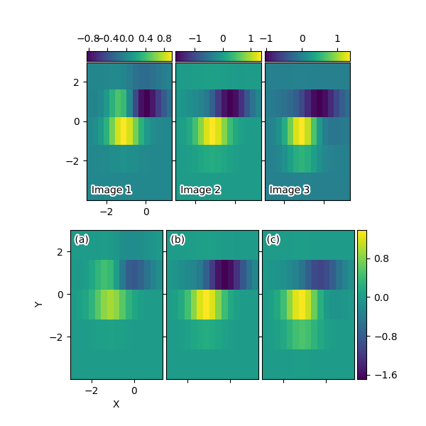

Version 2.2.2
Grid of images with shared xaxis and yaxis.
import matplotlib.pyplot as plt
from mpl_toolkits.axes_grid1 import ImageGrid
import numpy as np
def get_demo_image():
from matplotlib.cbook import get_sample_data
f = get_sample_data("axes_grid/bivariate_normal.npy", asfileobj=False)
z = np.load(f)
# z is a numpy array of 15x15
return z, (-3, 4, -4, 3)
def add_inner_title(ax, title, loc, size=None, **kwargs):
from matplotlib.offsetbox import AnchoredText
from matplotlib.patheffects import withStroke
if size is None:
size = dict(size=plt.rcParams['legend.fontsize'])
at = AnchoredText(title, loc=loc, prop=size,
pad=0., borderpad=0.5,
frameon=False, **kwargs)
ax.add_artist(at)
at.txt._text.set_path_effects([withStroke(foreground="w", linewidth=3)])
return at
if 1:
F = plt.figure(1, (6, 6))
F.clf()
# prepare images
Z, extent = get_demo_image()
ZS = [Z[i::3, :] for i in range(3)]
extent = extent[0], extent[1]/3., extent[2], extent[3]
# demo 1 : colorbar at each axes
grid = ImageGrid(F, 211, # similar to subplot(111)
nrows_ncols=(1, 3),
direction="row",
axes_pad=0.05,
add_all=True,
label_mode="1",
share_all=True,
cbar_location="top",
cbar_mode="each",
cbar_size="7%",
cbar_pad="1%",
)
for ax, z in zip(grid, ZS):
im = ax.imshow(
z, origin="lower", extent=extent, interpolation="nearest")
ax.cax.colorbar(im)
for ax, im_title in zip(grid, ["Image 1", "Image 2", "Image 3"]):
t = add_inner_title(ax, im_title, loc=3)
t.patch.set_alpha(0.5)
for ax, z in zip(grid, ZS):
ax.cax.toggle_label(True)
#axis = ax.cax.axis[ax.cax.orientation]
#axis.label.set_text("counts s$^{-1}$")
#axis.label.set_size(10)
#axis.major_ticklabels.set_size(6)
# changing the colorbar ticks
grid[1].cax.set_xticks([-1, 0, 1])
grid[2].cax.set_xticks([-1, 0, 1])
grid[0].set_xticks([-2, 0])
grid[0].set_yticks([-2, 0, 2])
# demo 2 : shared colorbar
grid2 = ImageGrid(F, 212,
nrows_ncols=(1, 3),
direction="row",
axes_pad=0.05,
add_all=True,
label_mode="1",
share_all=True,
cbar_location="right",
cbar_mode="single",
cbar_size="10%",
cbar_pad=0.05,
)
grid2[0].set_xlabel("X")
grid2[0].set_ylabel("Y")
vmax, vmin = np.max(ZS), np.min(ZS)
import matplotlib.colors
norm = matplotlib.colors.Normalize(vmax=vmax, vmin=vmin)
for ax, z in zip(grid2, ZS):
im = ax.imshow(z, norm=norm,
origin="lower", extent=extent,
interpolation="nearest")
# With cbar_mode="single", cax attribute of all axes are identical.
ax.cax.colorbar(im)
ax.cax.toggle_label(True)
for ax, im_title in zip(grid2, ["(a)", "(b)", "(c)"]):
t = add_inner_title(ax, im_title, loc=2)
t.patch.set_ec("none")
t.patch.set_alpha(0.5)
grid2[0].set_xticks([-2, 0])
grid2[0].set_yticks([-2, 0, 2])
plt.draw()
plt.show()